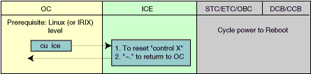
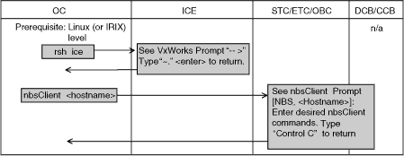

Operating Documentation
Direction 5114045-800, Rev# 10
LightSpeed 4.X Service Information (Advanced)
Operating Documentation |
The system has both serial and LAN communication lines that run between the OC and the ICE (Motorola RIP). These communication lines coordinate scanning and recon activities across the computers. Refer to Illustration 1 to manually check the communication lines serially and halt, reboot, or reset. Refer to Illustration 2 to manually check the LAN Communications from the OC to the ICE, and to the STC, ETC, and OBC controllers.
| NOTE: | Older systems may use an SGI Octane, which runs IRIX OS. |
Illustration 1: Serial Communications

Illustration 2: LAN Communications

There are two command line executables that can be used to check OC network configuration and status: ifconfig and netstat.
The command ifconfig can be used to verify that the network interface is running and is correctly configured on the system’s network. The interface is defined as running when it has been probed, attached, and started by the OS (host). There are several devices that are important to host network operation. On the host side, the internal network device name is ef0. The external network device name is ef1. Use the ifconfig as follows to get configuration data about your network. At a command line on the OC, enter ifconfig followed by the device you want to inspect. Use ef0 for the internal network or ef1 for external network. An example of the ifconfig use follows:
Example: Check Host’s internal/external networks.
>>ifconfig ef0
ef0:flags=1c63<UP,BROADCAST,NOTRAILERS,RUNNING,FILTMULTI,MULTICAST,CKSUM
inet 192.9.220.10 netmask 0xffffff00 broadcast 192.9.220.0
Comment: IP address 192.9.220.10 is a fixed internet number assigned to the Host.
>>ifconfig 5ef1
ef1:flags=ic63<UP,BROADCAST,NOTRAILERS,RUNNING,FILTMULI,MULTICAST,CKSUM>
inet 3.7.52.40 netmask 0xfffffc00 broadcast 3.7.55.255
Comment: IP addresses (e.g. 3.7.52.40), netmask, and broadcast will depend on your own network configuration.
The command netstat can be used to obtain network status about your network configuration on your system. At a command line on the OC, enter netstat followed by the appropriate argument. Using the -i argument, you can obtain status on your system’s network. Using the -r argument, you can obtain status on the devices routed by your network (such as an external suite). An example of the netstat usage initiated from the host using both arguments follows:
Example: Using the netstat command to check the network status
{ctuser@suite1}[1] netstat -i
Name Mtu Network Address Ipkts Ierrs Opkts Oerrs Coll
ef0 1500 192.9.220 suite1 105044 0 46423 0 0
vd0* 4336 none none 0 0 0 0 0
ef1 1500 3.7.52 suite1-gate 52809 0 15553 0 106
ppp0 1500 (pt-to-pt) olc-pm1 0 0 0 0 0
lo0 8304 loopback localhost 290542 0 290542 0 0
{ctuser@suite1}[2] >>netstat -r
Destination Gateway Netmask Flags Refs Use Interface default medctc1us UG 0 0 ef1 3.1.4 medctc2us 0xfffffc00 UG 0 0 ef1 3.1.20 medctc2us 0xfffffc00 UG 0 0 ef1 3.7.52 suite1-gate 0xfffffc00 U 0 6 ef1 192.9.220 suite1 0xffffff00 U 29 77 ef0 suite1 localhost UGHS 186 10 lo0
The nbsClient network boot server enables you to review the Scan Control Network CPU boards statuses and activity.
Follow the list of steps below to connect to the STC, OBC, and/or ETC CPU board controllers.
At the Operator's Console:
Open a shell on the right-hand display.
Type nbsClient<controller> <ENTER>
<controller> = stcor etc or obcr
<CNTRL+C> Logs you out of the nbsClient session.
| NOTE: | The following applies to the controllers:
|
============================================================
List of nbsClient commands for controllers
============================================================
Table 1: List of nbsClient Commands for Controllers
| Command | Description |
| ? | Print this list |
| @ | Boot (Load and go) |
| p | Print boot params |
| c | Change boot params |
| l | Load boot file |
| n | Display Host/Routing Table |
| g adrs | Go to adrs |
| d adrs[,n] | Display memory |
| m adrs | Modify memory |
| f adrs, nbytes, value | Fill memory |
| e | Print fatal exception |
| a | Print value of PC |
| i | Print Boot Revision and GIM |
| r type | Reboot, type = 'soft' or 'hard' |
| s device [c] | Print[clear] SCA or R/SCOM driver statistics |
| t cmd | Run diag, cmd = led value(s) of HK tests |
| u TID | Print TCB info for specified TID |
| v TID | Summarize TCB info, TID = 0 => all |
| w TID | Summarize stack usage, TID = 0 => all |
| x TID | Print a stack trace of TID |
| y | Dump the error log |
| z | Pipe the error log to the console |
| #hlp | Display Flash Command Usage |
$dev(0,procnum)host:/file h=# e=# b=# g=# u=usr [pw=passwd] f=#
=============== =============
There are two command line executables that can be used to check OC network configuration and status. They are ifconfig and netstat.
The command ifconfig can be used to verify that the network interface is running and is correctly configured on your system only. The interface is defined as running when it has been probed, attached and started by the OS (host). There are several devices that are important to host network operation. They are the gateway (ef0) and the BIT3 (vd0) devices. Use the ifconfig as follows to get configuration data about your network. At a command line on the OC, type ifconfig followed by the device you want to inspect-use ef0 or vd0. An example of the ifconfig use follows:
Example: Using the ifconfig command to check the host network
>>ifconfig ef0
ef0:flags=1c63<UP,BROADCAST,NOTRAILERS,RUNNING,FILTMULTI,MULTICAST,CKSUM
inet 3.7.52.150 netmask 0xfffffc00 braodcast 3.7.52.0
IP addresses (e.g. 3.7.52.150) will vary and depend on your own network configuration
>>ifconfig vd0
vd0:flags=8e3<UP,BROADCAST,NOTRAILERS,RUNNING,NOARP,MULTICAST>
inet 192.2.100.1 netmask 0xfffffc00 braodcast 192.2.100.255
The command netstat can be used to obtain network status about your network configuration on your system. At a command line on the OC, type netstat followed by the appropriate argument. Using the -i argument, you can obtain status on your system’s network. Using the -r argument, you can obtain status on the devices routed by your network (such as an external suite). An example of the netstat usage initiated from the host using both arguments follows:
Example: Using the netstat command to check the network status
>>netstat -i
Name Mtu Network Address Ipkts Ierrs Opkts Oerrs Coll ef0 1500 3.7.52 rhap25 655083 0 258478 1 141141 vd0 4336 192.2.100 ct01_oc0 19178 30 20406 53 0 lo0 8304 loopback localhost 965831 0 965831 0 0
>>netstat -r
192.2.100 ct01_oc0 0xffffff00 U 83 195 vd0
OVERVIEW
This procedure is used to turn off the routing daemon (if it is not already off), and add a default network route (static route) on a CT system that is part of a hospital network.
This applies to all LightSpeed software version 3.6 and above. The typical application is to connect a CT system to a network that uses a router or static routing instead of RIP.
PROCEDURE
It is recommended that you discuss your site's specific needs with the Network Administrator before performing this procedure. If you need assistance performing these steps, please contact the Network Support Group at the OnLine Center.
| NOTE: | Please be aware that if this procedure is performed on a system, it needs to be performed again following a software reload. Prior to performing a software reload, ensure that changes to the files addressed in this procedure are documented. |
Open a shell and switch user to root:
su - (and enter the root password)
Change directory as follows:
cd /etc/config
Create a backup copy of the static-route.options file:
cp static-route.options static-route.options.lfc
Determine the desired static route IP address(es) from the site's Network Administration. Add these desired static routes to the static-route.options file. It is preferred to use the “jot” text editor to modify the file, as “jot” is an X-Windows screen editor with an intuitive user interface.
jot static-route.options
Add the desired route address(es) at the end of the file, using the following syntax:
$ROUTE $QUIET add default www.xxx.yyy.zzz (where this is the IP Address of the default router, provided by the site)
or
$ROUTE $QUIET add -net www.xxx.yyy.zzz (where this is the IP Address of the network/subnetwork, provided by the site)
or
$ROUTE $QUIET add www.xxx.yyy.zzz(where this is the IP Address of a specific host, provided by the site)
Save the changes to the static-route.options file using the FILE pulldown menu.
Exit "jot".
Verify the entries made to the static-route.options file by typing:
more static-route.options
Reboot the system for the changes to take effect.